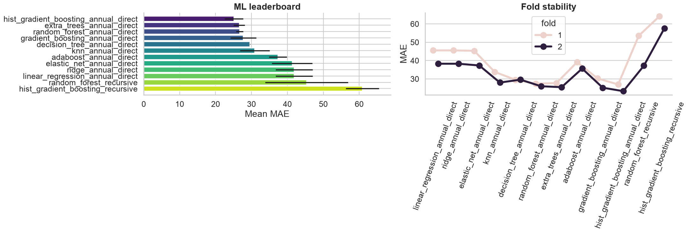

Forecasting beyond the next few hours
A long-horizon pedestrian-count forecasting study comparing statistical and machine-learning models against daily, weekly, and annual seasonal structure.
The question
How can a forecast preserve seasonal behavior over 1,439 hours without using unavailable future observations?
Experimental design
- Audited 41,328 observed hourly street-sensor counts and a 1,439-hour forecast horizon.
- Used season-matched expanding-window folds beginning in January 2018 and 2019, with explicit checks on feature availability at each forecast origin.
- Compared dynamic harmonic regression with ARIMA errors, structural unobserved-components models, and direct machine-learning estimators including histogram gradient boosting.
- Investigated Fourier features, annual lags, 52-week analogues, robust median scaling, shrinkage-calibrated blends, residual diagnostics, and leave-one-fold-out calibration audits.
Results and their interpretation
| Model / evaluation | MAE | Interpretation |
|---|---|---|
| Seasonal-naive blend | 36.11 | Baseline |
| Histogram gradient boosting | 25.12 | Two selection folds; freshly reproduced |
| Calibrated ARIMA | 24.51 | Pooled calibration / scoring folds |
| Calibrated UCM | 23.62 | Pooled calibration / scoring folds |
| Stricter ARIMA calibration audit | 24.93 | Leave-one-fold calibration |
| Stricter UCM calibration audit | 25.73 | Leave-one-fold calibration |
These are validation scores, not hidden-test performance. The selected statistical blends fitted and scored weights on pooled folds, which can be optimistic. The stricter leave-one-fold audit is a separate experiment. The selected histogram-gradient-boosting model was freshly fitted on both original folds and reproduced mean MAE 25.116469; these remain model-selection folds.

What the experiment does not establish
- No independent hidden-test score is available.
- The full slow ARIMA/UCM search was not rerun during repository preparation.
- Saved blend weights reproduce the selected structure; they do not demonstrate that every historical output is byte-identical.
Reproduce and inspect
Run the data audit, seasonal baseline backtest, and direct machine-learning experiment. The repository also includes the original model grid, selected statistical forecast runner, and fixed calibration weights.
Open the repository ↗Evidence: Course report, executed notebook, supporting scripts and result tables. First on the course leaderboard among more than 100 students, as reported by the candidate.